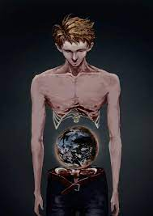

SCP-007

Tárgyosztály: Eukleidész
Speciális elszigetelési eljárások: Az SCP-007-et egy lezárt helyiségben kell tárolni, melynek mérete mindkét oldalon 10 m. A szobát kényelmesen, lakótérként kell berendezni, a ███████████████ (a továbbiakban: Alany) által igényelt tárgyakkal együtt, tekintettel arra, hogy az Alanynak a kért tárgyakkal való ellátása nem veszélyezteti a biztonságot. Az alany nem hagyhatja el a helyiséget, és szükség esetén erőszakkal vissza kell tartani.
Leírás: Az SCP-007 az alany hasában található üregben található. Az alany egy kaukázusi férfi, fizikailag körülbelül 25 éves (az alany állítása szerint 28 éves) és 176 cm magas. Az alany hasának nagy része (izmok, bőr és szervek) hiányzik, bár úgy tűnik, hogy az alany nem szenved emiatt. A normál hús helyett egy talajból és vízből álló gömb van jelen, bár valójában egyetlen ponton sem érintkezik az alany testével. A gömb a legtöbb tekintetben a Föld miniatűr másodpéldányának tűnik, körülbelül 60 cm átmérőjű, bár a kontinensek elrendezése nem áll összhangban a Föld történetében ismert bármely elrendezéssel. A gömbnek megvannak a maga időjárási mintái és elhanyagolható gravitációs vonzása, amellett, hogy mikroszkopikus méretű organizmusok élnek benne, amelyek némileg hasonlítanak a mai Földére. Két intelligens fajt figyeltek meg, bár egyikükkel még nem sikerült kapcsolatba lépni és kommunikálni. A megfigyelt fajok technológiai szintjét hetente legalább egyszer ellenőrizni kell, és ██/████-i állapot szerint megközelítőleg megegyezik a 15. századi Földével.
Az alany azt állítja, hogy ███████████████, de ilyen személyről nem található feljegyzés. Az alanynak nincs szüksége ételre vagy vízre, és bár megfigyelték, hogy mindkettőt fogyasztja, nem ismert, hogy mi történik az ilyen anyagokkal a lenyelés után. Az alany intelligens (az IQ-t 128-ra mérték) és barátságos, és a hasában lévő bolygót kisebb kíváncsiságnak tekinti a testével kapcsolatban. Úgy tűnik, hogy az alany nem tapasztal stresszt szokatlan állapotával kapcsolatban. Amikor a bolygó eredetéről kérdezték, az alany azt válaszolta: "Egy nap csak felébredtem, és ott volt. Fogalmam sincs, hogyan került oda." Az alany megadta a társadalombiztosítási számát és a jogosítvány számát, és kérte, hogy ellenőrizzék ezeket az ismert nyilvántartásokhoz képest. Az ellenőrzés során kiderült, hogy még egyiket sem osztották ki.
Dr. ███████ hetente sakkjátszmát tart az alanyal, amely során az alany mentális egészségét értékelik. Dr. ███████ arról számol be, hogy az alany láthatóan nem bánja a korlátozott lakókörnyezetet, és még mindig nem kísérelte meg a szökést, illetve nem mutatta erőszakra vagy mentális betegségre utaló jeleket, bár többször is igényelt internetkapcsolattal rendelkező számítógépet. Javasoljuk, hogy ezt ne adják meg, mivel ez a biztonság veszélyeztetésére szolgálhat.